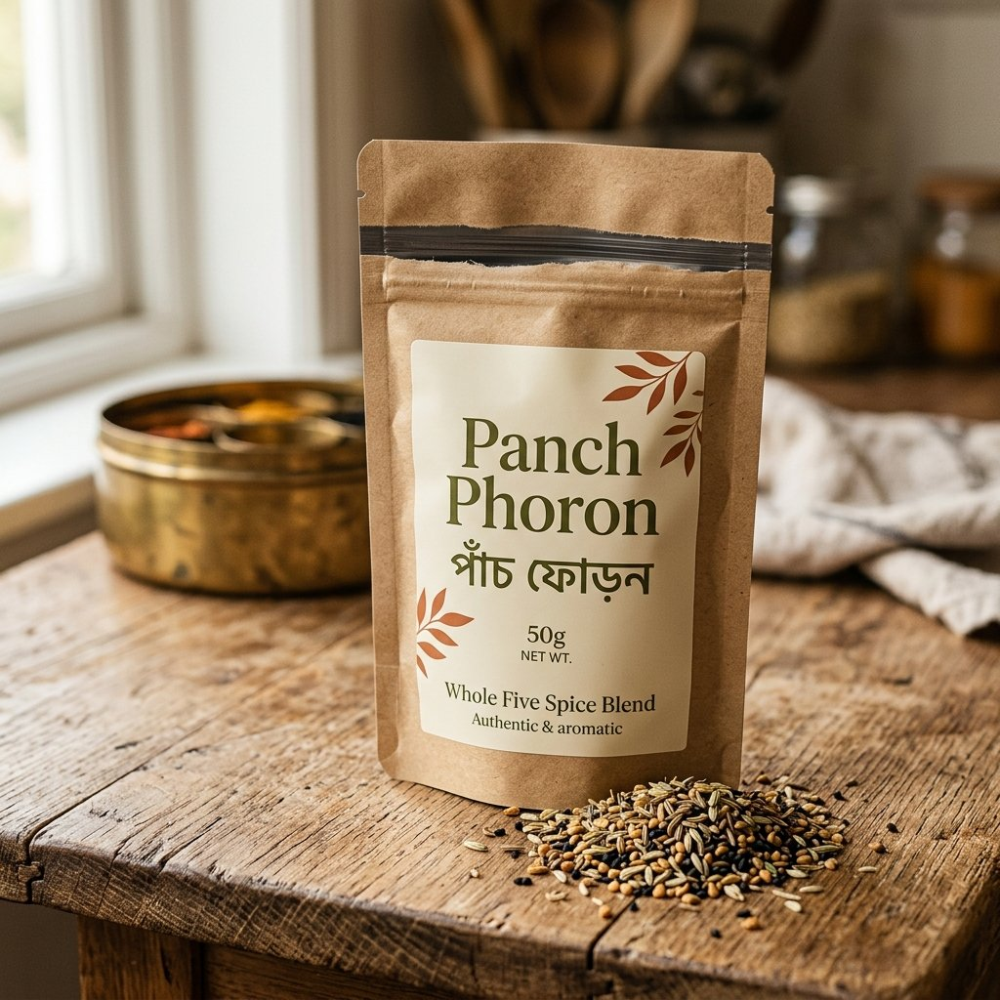
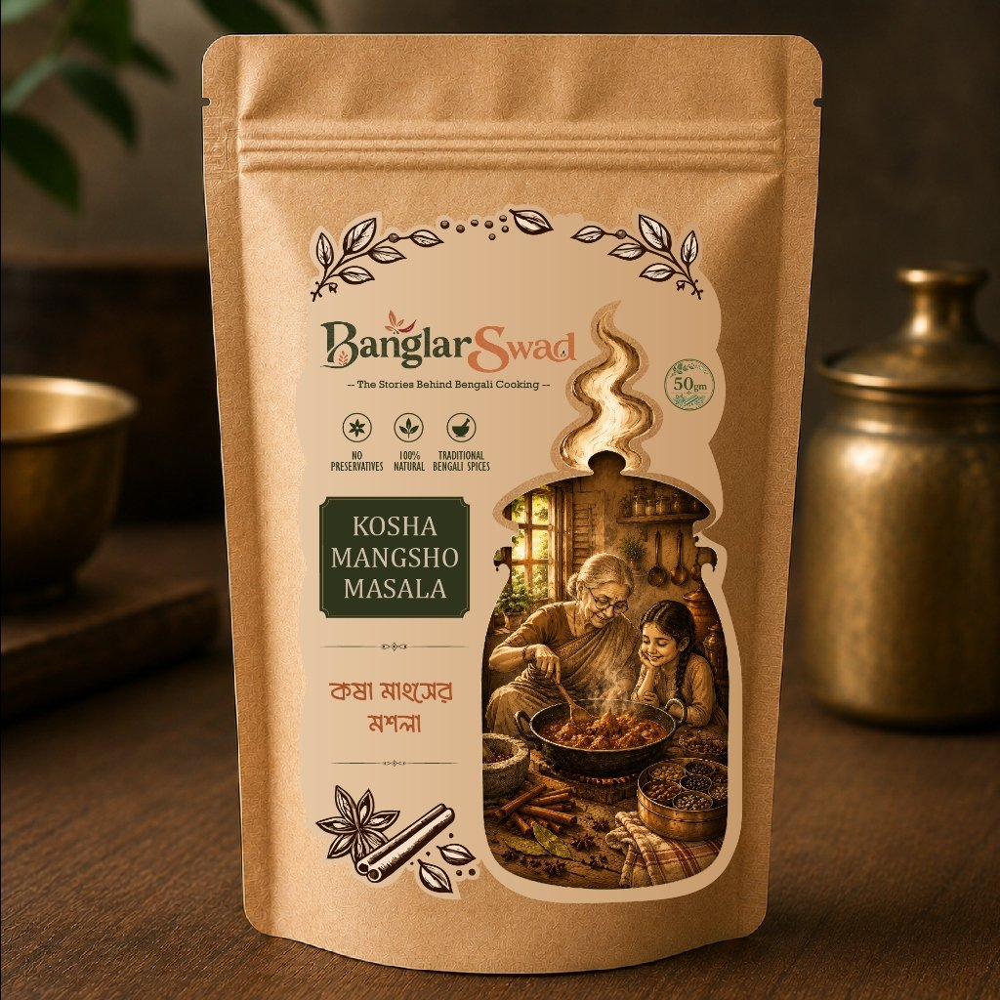
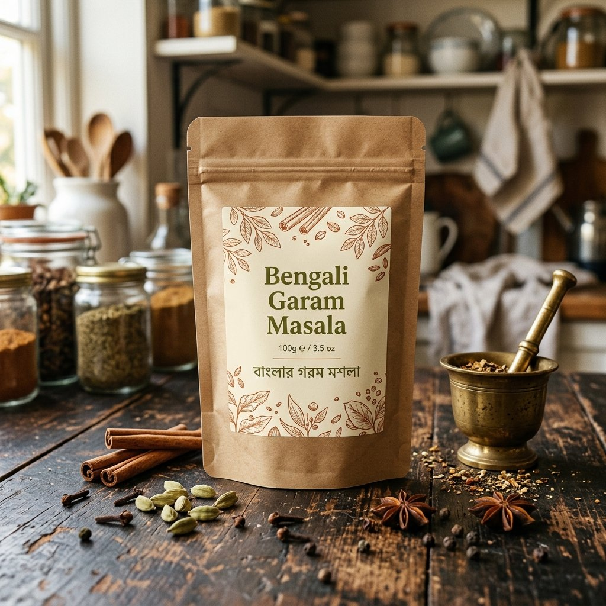
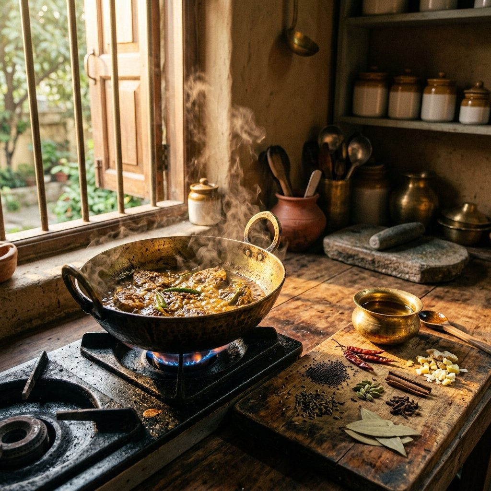

Developing a bespoke storefront and immersive CGI visual systems for Bengal's handcrafted regional spice blends.
Banglar Swad approached us with a unique mission — to revive the traditional flavors of Bengal and package them as convenient, premium spice blends. Their signature offering, the Bengali Kitchen Starter Kit (featuring foundational blends like Panch Phoron, Kosha Mangsho Masala, and Bengali Garam Masala), needed a D2C platform that was as sensory and aromatic as the spices themselves. They needed a high-performance storefront that combined traditional heritage with modern, frictionless checkout.

Reviving heritage food products online requires more than just listing ingredients; it requires conveying aroma, nostalgia, and authentic preparation steps through a digital screen. Our challenge was to design a highly engaging, custom-coded e-commerce platform that simplified the purchase flow, educated users on the cooking process, and loaded instantly on mobile devices, where 90% of their D2C traffic originates.
We built a bespoke D2C storefront utilizing optimized custom styling and layout flows. To convey the texture and quality of the whole spices and ground blends, we developed photorealistic CGI animations showing the ingredients in motion. We structured the landing page as a single-product high-converting funnel, utilizing direct add-to-cart triggers, subscription kits, and integrated step-by-step video recipes to drive trust and convenience.
The e-commerce experience should feel like walking into a traditional Bengali kitchen — warm, nostalgic, and filled with the rich aroma of Panch Phoron and ghee.
The storefront features a custom-built, lightweight cart system and checkout funnel designed to eliminate purchase friction. With lightning-fast page speed and integrated payments, the checkout flow takes less than 3 taps. We also created a recipe portal containing video guides that show customers how to prepare authentic Bengali dishes, transforming simple ingredient packs into complete dining experiences.
To capture the sensory essence of the spice blends, we engineered high-fidelity CGI visuals that highlight the quality of the premium cumin seeds, nigella seeds, cardamom, cinnamon, and raw whole spices. These assets are deployed across the web storefront, product galleries, and paid ad creatives, establishing a visual standard that immediately captures attention and drives hunger.
From whole tempering seeds to rich finishing powders, our visual styling reflects the distinct culinary role of each spice blend.

The signature five-spice whole blend. Cumin, fennel, fenugreek, nigella, and black mustard seeds tempered in hot oil.

A deeply aromatic blend roasted and slow-ground for the legendary Bengali slow-cooked mutton curry.

Sweet and cardamom-heavy finishing spice blend. Added at the very end of cooking to lock in the aroma.
Our social and digital creatives highlight the simplicity of cooking traditional dishes at home. Using a blend of creator-produced UGC videos and premium CGI, we created paid acquisition ads that delivered a 4.5x ROAS, turning scroll-stopping visuals into repeat D2C buyers.

A sensory brand film capturing the heritage, sourcing, and preparation of handcrafted spices — where every frame tells a story of taste, tradition, and memory.
Banglar Swad launched their signature spice kits to national success. The bespoke e-commerce storefront achieved a 4.8% conversion rate — far exceeding the industry average. Backed by scroll-stopping CGI and paid acquisition funnels, the brand scaled from zero to over 40,000 packs sold in under 6 months, establishing themselves as the premier D2C destination for authentic Bengali culinary kits.